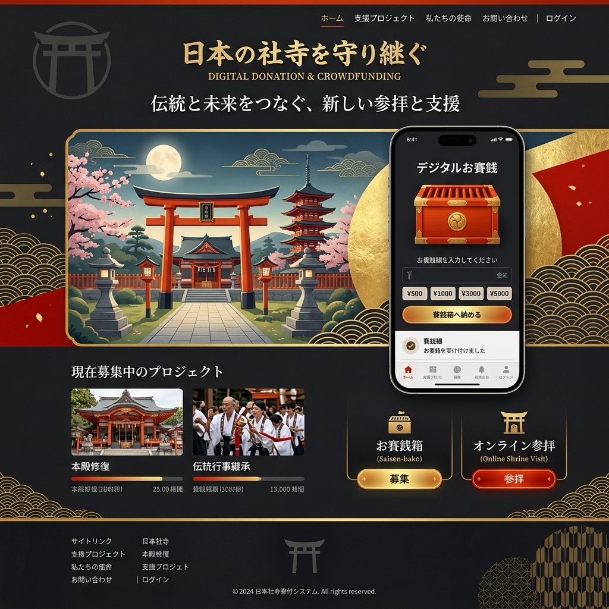

神々への祈りに、
小銭はいらない。
「お賽銭用に小銭を作らなきゃ」。そんな煩わしさは、もう過去のものです。JINJA-PAYは、全国の神社仏閣の景観を一切損なうことなく、QRコードとNFCでシームレスな電子浄財（お賽銭）を実現する、伝統×FinTechソリューション。

「硬貨の取扱手数料」が神社を圧迫する
近年、銀行における大量の硬貨の入金・両替手数料が大幅に引き上げられました。皆様から頂いた大切なお賽銭（1円玉や5円玉）を銀行へ預け入れるだけで、かえって神社側が「赤字」になってしまうという、笑えない事態が全国で起きています。
景観に溶け込む、究極のミニマル決済
木彫りのQRコード＆NFCチップ
無機質な決済端末は置きません。神社の景観に合わせた特注の「木製プレート」にQRコードをレーザー刻印。スマホをかざすだけでApple Pay等で瞬時に決済完了。
賽銭泥棒からの完全な解放
深夜の無人神社でも、現金が賽銭箱に存在しないため、盗難のリスクが物理的にゼロに。防犯カメラや見回りのコストを劇的に削減します。
多言語対応インバウンド決済
日本の小銭の使い方がわからない外国人観光客も、自国のAlipayやWeChat Pay、クレジットカードでスムーズにお賽銭を奉納できます。
「ご縁（5円）」をデジタルで表現するUI
決済画面は単なる数字の入力ではありません。「5円（ご縁がありますように）」「115円（いいご縁）」「88円（末広がり）」など、金額に込められた語呂合わせの意味を美しいアニメーションと共に表示し、祈りの体験を豊かにします。
遠方からの「オンライン祈祷・お守り授与」
病気や遠方で直接参拝できない方のために、アプリ上からオンラインで祈祷の申し込みやお守りの郵送手続きが可能。お正月の混雑を避けた「分散参拝」のプラットフォームとしても機能します。
Case Study | 京都の歴史ある中規模神社
インバウンド客は多いものの、小銭を持たないためお賽銭が集まらず、社殿の修繕費に悩んでいた神社。JINJA-PAY導入後、外国人からの奉納額が急増。さらに国内の若者層からも「小銭を探すストレスがない」と好評を得て、全体のお賽銭収益が前年比で140%増加しました。
伝統を守るために、システムを変える
神様への感謝の気持ちは、現金（物質）である必要はありません。時代がキャッシュレスに移行する中、私たちは最も古い日本のインフラである神社仏閣を、デジタルの力で次の100年へと繋ぎます。